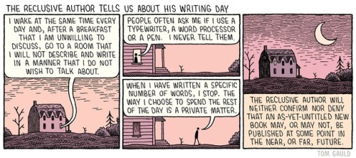

El Pueblo de los Seis Rios
Parte del texto Adiós, Monterrey VI de Antonio Hernández:
Somos el Pueblo de los Seis Ríos. Seis subcuencas hidrográficas son las que nos han sostenido en todos los tiempos de la ciudad. Con afluentes desde los bosques en las montañas, o atravesando...
Common rules in cryptography
While cryptographic security is precisely defined, this paper asks the question whether developers who use cryptographic APIs achieve this notion of security. Using cryptographic primitives correctly can be challenging. In particular, any application...
I wish I knew what to do with my life...
I wish I knew what to do with my life, what to do with my heart… I do nothing all day, boredom settles in, I look at the sky so I get to feel even smaller than I already feel and my mind keeps poisoning itself uselessly.
The Unabridged Journals of...
The reclusive author tells us about his writing day

Source: YOU’RE ALL JUST JEALOUS OF MY JETPACK.
The Egg
You were on your way home when you died.
It was a car accident. Nothing particularly remarkable, but fatal nonetheless. You left behind a wife and two children. It was a painless death. The EMTs tried their best to save you, but to no avail. Your...
Walking the cow
I really don’t know how I came here.
I really don’t know why I’m staying here.
I really don’t know what I have to fear.
I really don’t know what I have to care.
But life is loneliness
God, but life is loneliness, despite all the opiates, despite the shrill tinsel gaiety of ‘parties’ with no purpose, despite the false grinning faces we all wear. And when at last you find someone to whom you feel you can pour out your soul, you...
Frases y fragmentos de lecturas más o menos recientes
126) Let us explain why technology is a more powerful social force than the aspiration for freedom.
127) A technological advance that appears not to threaten freedom often turns out to threaten it very seriously later on. For example, consider...
When the spirits are low, when the day appears dark
When the spirits are low, when the day appears dark, when work becomes monotonous, when hope hardly seems worth having, just mount a bicycle and go out for a spin down the road, without thought on anything but the ride you are taking.
— Arthur...
La camisa del hombre feliz
En las lejanas tierras del norte, hace mucho tiempo, vivió un zar que enfermó gravemente. Reunió a los mejores médicos de todo el imperio, que le aplicaron todos los remedios que conocían y otros nuevos que inventaron sobre la marcha, pero lejos de...